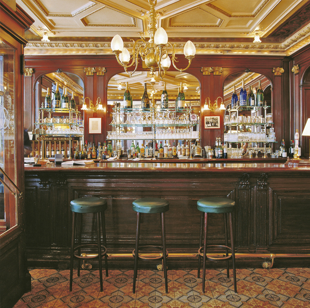
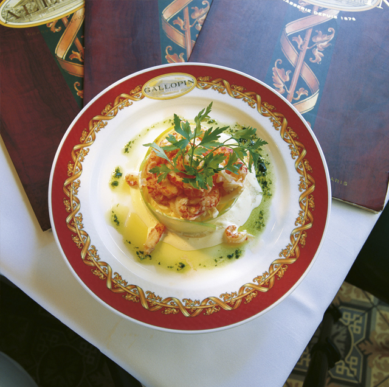

„Gallopin“ – настоящая жемчужина среди парижских питейных заведений. Ее основатель Гюстав Галлопэн уже в 1876 году очень тонко чувствовал дух своего времени. Сегодня ресторан принадлежит семье Александр, которой благодаря глубокому пониманию французской культуры удалось вернуть этому заведению былой блеск. Как и в конце 19 века здесь снова собирается очень пестрая многонациональная публика, в том числе и интеллектуалы. Наряду с банкирами и биржевыми маклерами богатый традициями ресторан влечет многочисленных посетителей, работающих в средствах массовой информации, в шоу-бизнесе и принадлежащих миру моды. На своей кухне Дидье Пьятек готовит классические французские блюда. Сюда приходят на бизнес-ланч и обильный ужин, берут, например, тартар из говядины с картофелем фри и зеленым салатом – это блюдо принято подавать к столу на серебряной сервировочной тележке; или говяжье филе, обжаренное на гриле, под соусом «бернез». Кстати, вся посуда в ресторане изготовлена по специальному заказу: оригинальное изображение гирлянды, украшающее кромку каждой тарелки, является фрагментом потолочной росписи. К простым сытным блюдам стоит взять стаканчик вина – а вина здесь отменные! Благодаря недавно приобретенной системе открывания бутылок, создающей вакуум внутри сосуда, качество вина в откупоренной бутылке не ухудшается, поэтому теперь даже довольно дорогие вина предлагаются на разлив – публика в восторге!


{kind=link}
{kind=link}